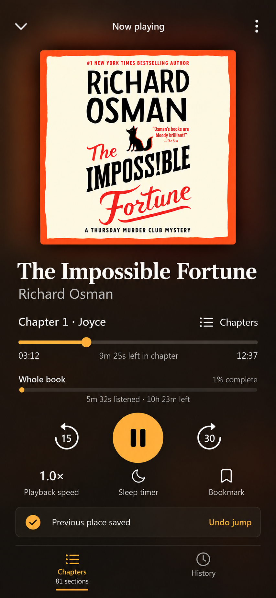
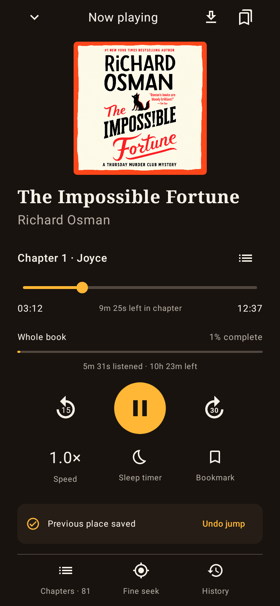
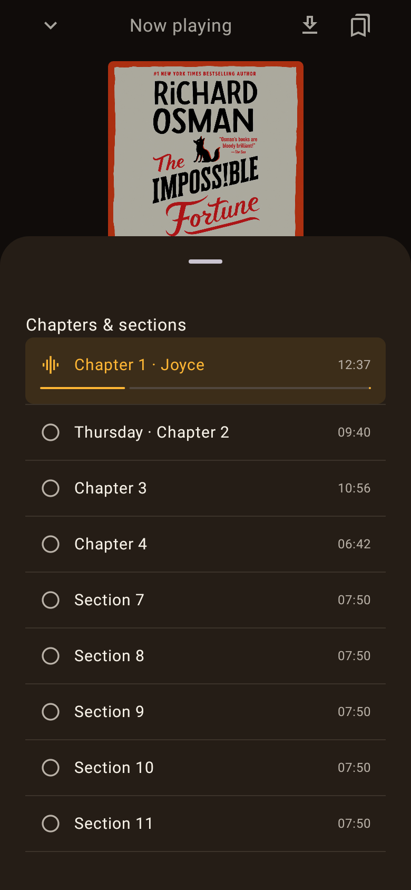

<!doctype html>
<html lang="en">
<meta charset="utf-8">
<meta name="viewport" content="width=device-width,initial-scale=1">
<title>AudioBooks native player comparison</title>
<style>
  * { box-sizing: border-box; }
  body { margin: 0; padding: 20px; background: #e8e4df; color: #24201d; font: 14px system-ui, sans-serif; }
  main { display: flex; gap: 24px; align-items: flex-start; width: max-content; }
  figure { margin: 0; width: 390px; }
  figcaption { min-height: 64px; line-height: 1.5; }
  img { display: block; width: 390px; height: auto; }
  strong { display: block; font-size: 17px; }
</style>
<main>
  <figure><figcaption><strong>Selected visual reference</strong>853 × 1844 raster, displayed at 390px wide.</figcaption></figure>
  <figure><figcaption><strong>Built native Android player</strong>780 × 1688 at 2× density: 390 × 844 logical pixels.</figcaption></figure>
  <figure><figcaption><strong>Built native chapter sheet</strong>Same viewport; illustrative rendering-test book data.</figcaption></figure>
</main>
</html>
